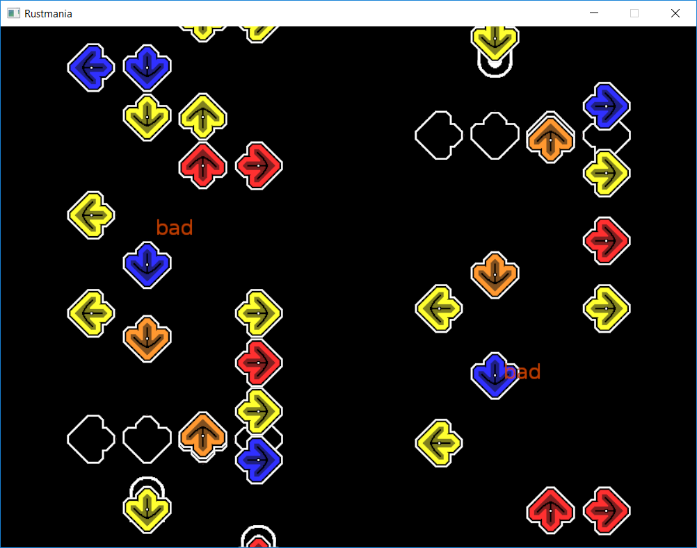

RustMania is a VSRG inspired by Stepmania and Etterna.
As the game is early in development we do not have any official releases, however you can still obtain a development version from our Github.
Why you should be excited about RustMania:
Cool things that are planned:
To compile RustMania, you will first need to install Rust, this can most easily be done through `rustup`.
On Windows, you can download and run the installer from the Rust website.
On Linux or macOS, you can install rustup with the following command:
curl https://sh.rustup.rs -sSf | sh
Once Rust has installed, you can compile and run the game using `Cargo`, Rust's built-in package manager. To compile and open the resulting binary with the default resources, you can simply input the following command:
cargo run --release
Next Release
Distributed under the MIT license. See ``LICENSE`` for more information.
"Mu" by Solarbear is licensed under CC SA 3.0.